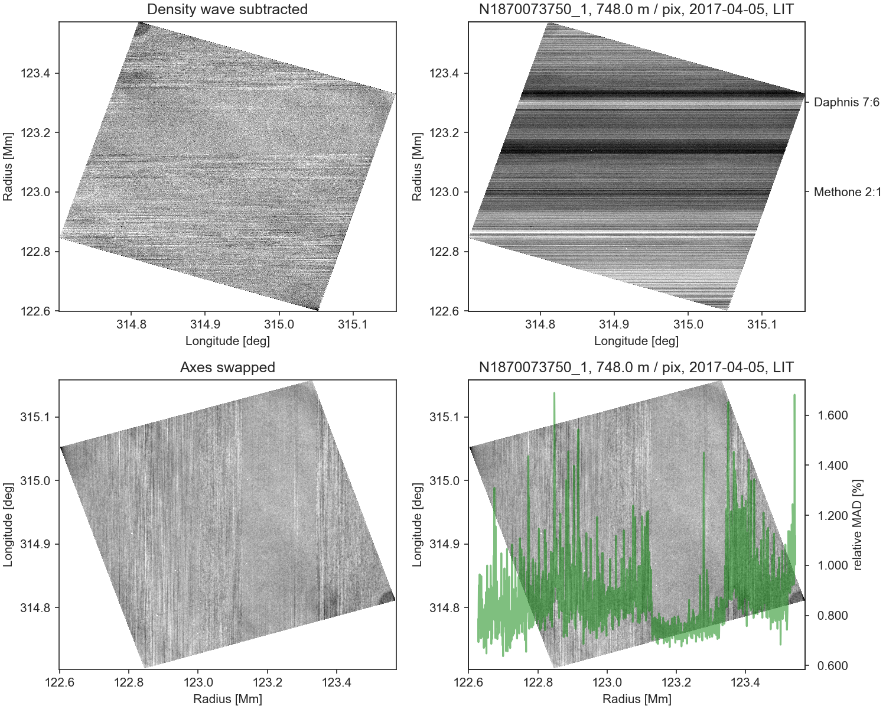

Mesoscale Structures in Saturn’s Rings: Clues to Origin and Evolution
I am a funded Co-I on this project led by Joshua Colwell (UCF). My task is to analyze Cassini ISS images of the Saturn rings like shown above, project them into the ring-cylindrical coordinate system so that one can do statistics along the ring azimuth. After subtracting the dominant background density wave signal one can produce statistical statements about potential clumping changes over the Saturn ring radius, using robust median absolute deviation statistics.

Project summary
We propose to apply a variety of image processing techniques to observations of Saturn’s rings made by the Cassini Imaging Science Subsystem (ISS) and the Ultraviolet Imaging Spectrograph (UVIS) to investigate a previously unexpected aspect of Saturn’s rings: non-axisymmetric mesoscale structures that are larger than individual particles or self-gravitating clumps of particles and smaller than regular structures such as ringlets, density waves, and bending waves.
ISS images of the C ring reveal unexpected texture indicating structures spanning about 1 km in ring radius and several tens of km in the azimuthal direction. The nature and amount of this texture in the images varies across the C ring. Similar texture is seen in the outer portion of the B ring as well as within density waves in the A ring. UVIS observed a series of special stellar occultations that had very low velocities in the local ring particle frame (“particle tracking occultations”). These provide uniquely high resolution for non-axisymmetric structures.
UVIS also observed many occultations of binary stars where the two stars’ separation distances projected in the ring plane span 10’s of m to a few km. These occultations are ideally suited for studying mesoscale structures. By analyzing changes in the auto-correlation of the occultation light curve we can measure changes in ring optical depth at a given ring plane radius since the two stellar components cross that radial position at different longitudes. The combination of multiple UVIS occultations at different viewing geometries, both in ring elevation and azimuth, make it possible to study not only the sizes and distribution of mesoscale structures but also their three-dimensional shapes.
We will incorporate analysis of the higher order moments of the UVIS stellar occultations as well as carry out N-body simulations of the rings using a well-tested collisional and self-gravitating model developed by Co-I Lewis. We will forward model the rings and reproduce the textured structure seen in ISS images as well as occultation signals of non-axisymmetric structures. We will test the effects of particle density, particle size distribution, and local embedded perturbers (giant boulders or miniature moonlets) to understand the conditions required for formation of these structures that likely include both large-scale aggregates or density enhancements as well as azimuthally-limited gaps or holes in the rings.
We will compare these results with observations made across the ring system including “straw” in density waves in the A ring and various streaky texture identified in images across the main rings. We will compare the simulations with particle-tracking occultations throughout the main rings to better understand the differences in ring particle properties across the system. Comparisons of both occultation data and high-resolution imaging data with simulations will show the effects of particle properties, distance from Saturn, local ring surface mass density, and effects of gravitational perturbations from external satellites and embedded moonlets.
We will search for evidence of secular changes in these structures to better understand the evolution of the system. Results from our analysis will constrain long-term evolutionary models of the viscous spreading of the rings as well as ring erosion and pollution models. The results of this research will thus help us address fundamental questions about the origin of the rings, such as whether the different main ring regions have a common or separate origin.